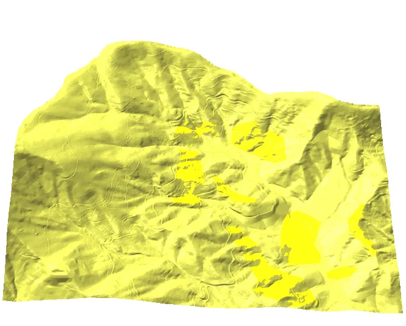

Assignment 5A
Fusion of UAS and lidar data
Outline
- analyze the differences between the lidar (2013, 2015 surveys) and UAS DEM/DSM
- fuse selected lidar and UAS DSM
- evaluate impact of fusion technique on water flow simulation
Data
You should have everything already for Mid Pines area, get anything missing from the Course logistics web page
- GRASS Project: LakeWheeler_NCspm
- 2013 lidar interpolated DEM and DSM: download, use
r.unpack.
Tools
- GRASS GIS 8.4
- GRASS Addon: r.patch.smooth
Install r.patch.smooth with the following command:
g.extension r.patch.smoothWorkflow overview
First we need to evaluate the DSMs to find out which are suitable for fusion
- Compute the difference between a selected lidar DSM and selected UAS DSMs: entire raster, along a stable linear feature (road and roof).
- Use the results to evaluate whether there is a significant systematic error, such as vertical shift in profiles along the road.
- Use the raster differences to identify distortions, look for unexpected patterns, verify with profile, and exclude distorted areas from study area.
- You have lidar DEM, DSM and a low-distortion subset of UAS DSM:
- Create a new DSM for the entire area using two approaches and compare how the two approaches work for water flow modeling.
- Combine parts of UAS and lidar DEM to create bare ground, model water flow and compare with water flow modeled on DSM.
1. Analyze the difference between the lidar and UAS DSM
Download the suggested color table for differences, used in the workflow as dif_lidar_uav.txt.
If you run r.colors from command line, make sure the color table file is in your current working directory.
-40 red
-1 orange
-0.5 yellow
-0.1 grey
0 white
0.1 grey
0.5 cyan
1 aqua
35 blueDownload lidar DSM and DEMs if you haven’t done already, unzip it in your working directory and unpack:
r.unpack -o input=mid_pines_lidar2013_dsm.pack
r.unpack -o input=mid_pines_lidar2013_dem.packCompute the differences between the lidar and UAS DSMs and evaluate their spatial distribution and
summary statistical properties:
g.region rast=mid_pines_lidar2013_dsm -p
r.mapcalc "diff_lidardsm_agi_june = mid_pines_lidar2013_dsm - 2015_06_20_DSM_agi_11GCP"
r.colors diff_lidardsm_agi_june rules=dif_lidar_uav.txt
r.univar diff_lidardsm_agi_june
r.mapcalc "diff_lidardsm_pix4d_june = mid_pines_lidar2013_dsm - 2015_06_20_pix4d_11GCP_dsm"
r.colors diff_lidardsm_pix4d_june rules=dif_lidar_uav.txt
r.univar diff_lidardsm_pix4d_juneEvaluate possible systematic shift along stable features using the following commands:
r.profile -g input=diff_lidardsm_agi_june output=road.txt coordinates=637208,219491,637059,219734
v.in.ascii input=road.txt output=profile_road separator=space columns="x double,y double,profile double,diff double"
v.univar map=profile_road column=diffFor more visual comparison use GUI Profile Tool. In Map Display toolbar, find Analyze map - Profile surface map and select raster maps mid_pines_lidar2013_dsm, 2015_06_20_DSM_agi_11GCP, and 2015_06_20_pix4d_11GCP_dsm. In Profile toolbar, use the second tool Draw transect in map display window` and then click in Map Display on the road where you want to start the profile and then where you want to end it. Use Plot options** to show legend and to set colors of the DSM profiles (look for the yellow wheel icon).
Why are the distortions / errors low along the road but high in the fields?
Because the shift in the lidar and UAS DSM is small we will ignore it in our first set of fusion examples, but we will use the analysis above to select the region with minimal distortion in the UAS DSM and compute a clipped DSM:
g.region n=219720.9 s=219257.1 w=636762.9 e=637190.4 res=0.3 -p
r.mapcalc "2015_06_20_DSM_agi_11GCP_cl = 2015_06_20_DSM_agi_11GCP"2. Patch and fuse the lidar and UAS DSM
For the rest of the assignment we will use rasters 2015_06_20_DSM_agi_11GCP_cl, mid_pines_lidar2013_dsm, and mid_pines_lidar2013_dem. To make the instructions more readable, we will create a copy of these rasters with short names:
g.copy raster=2015_06_20_DSM_agi_11GCP_cl,uas
g.copy raster=mid_pines_lidar2013_dsm,lidar_dsm
g.copy raster=mid_pines_lidar2013_dem,lidar_demPatch UAS DSM with lidar DSM to cover the entire Mid Pines study area and use shaded relief to check for edges:
g.region rast=lidar_dsm -p
r.patch uas,lidar_dsm out=lid_uas_patch
r.relief lid_uas_patch out=lid_uas_patch_relief zscale=5We have visible discontinuity along the patch edges. Therefore we will use weighted average to smooth out the overlap with the following workflow. We will use two different overlap widths — 5 and 20 meters — compare the results and try to explain how the smoothing works in your report:
r.grow.distance -n input=uas distance=distance
r.mapcalc "patched_smooth_5 = if(distance > 5, uas, if(distance == 0, lidar_dsm, (1 - distance/5) * lidar_dsm + (distance/5 * uas)))"
r.mapcalc "patched_smooth_20 = if(distance > 20, uas, if(distance == 0, lidar_dsm, (1 - distance/20) * lidar_dsm + (distance/20 * uas)))"
r.relief patched_smooth_5 out=patched_smooth_5_relief zscale=5
r.relief patched_smooth_20 out=patched_smooth_20_relief zscale=53. Create bare ground by fusing UAS DSM and lidar DEM
To properly model water flow on the UAS DSM, we replace vegetation captured in the DSM with lidar bare ground (lidar_dem). We extract only those parts of UAS DSM where it is higher than lidar ground by 30 cm:
g.region rast=uas -p
r.mapcalc "uas_ground = if(uas - lidar_dem < 0.3, uas, null())"Now we will fuse lidar and the UAS ground using the same method as above. This time, we will use addon r.patch.smooth:
g.extension r.patch.smoothIn the first case we will use overlap width 10m:
g.region rast=lidar_dsm -p
r.patch.smooth input_a=uas_ground input_b=lidar_dem output=lidar_uas_ground_smooth smooth_dist=10
r.relief lidar_uas_ground_smooth out=lidar_uas_ground_smooth_relief zscale=5In the second case we will use an alternative approach (using -s flag) which uses spatially variable overlap width based on the elevation differences along the borders (see r.patch.smooth manual):
r.patch.smooth -s input_a=uas_ground input_b=lidar_dem output=lidar_uas_ground_smooth2 overlap=overlap transition_angle=1.3 parallel_smoothing=13
r.relief lidar_uas_ground_smooth2 out=lidar_uas_ground_smooth2_relief zscale=5Add raster overlap to see the spatially variable overlap.
4. Compare surface flow pattern on patched and fused DSMs
The aim of the processing is to investigate the flow pattern simulated on different DSMs and DEMs. The lidar 2013 and the timeseries of UAS-based DSMs will be used as input for simulations using r.sim.water.
First, we examine the watershed boundaries to see which area to include:
g.region rast=lidar_dem -p
r.watershed elevation=lidar_dem threshold=50000 accumulation=flowacc basin=basin
r.to.vect -t input=basin output=basin type=areaWe will compute water flow on our fused DEM within our selected region. We need first order spatial derivatives which can be derived either using r.slope.aspect or during interpolation phase with v.surf.rst.
g.region n=219728.7 s=219435 w=636708.9 e=637122.6 res=0.3 -pa
r.slope.aspect elevation=lid_uas_patch dx=lid_uas_patch_dx dy=lid_uas_patch_dyThe simulation writes water depth and discharge raster maps so we can look at first results soon although the simulation takes a lot of time. Depending on your processing power, you can make the region smaller.
r.sim.water -t elevation=lid_uas_patch dx=lid_uas_patch_dx dy=lid_uas_patch_dy rain_value=30 man_value=0.15 depth=lid_uas_patch_depth discharge=lid_uas_patch_disch nwalkers=100000 niterations=20 output_step=1 hmax=0.2 halpha=8.0 hbeta=1.0Now we will compute the water flow simulation on the DSM patched using smooth fusion:
r.slope.aspect elevation=patched_smooth_20 dx=patched_smooth_20_dx dy=patched_smooth_20_dy
r.sim.water -t elevation=patched_smooth_20 dx=patched_smooth_20_dx dy=patched_smooth_20_dy rain_value=30 man_value=0.15 depth=patched_smooth_20_depth discharge=patched_smooth_20_disch nwalkers=100000 niterations=20 output_step=1 hmax=0.2 halpha=8.0 hbeta=1.0Now compare the results (lid_uas_patch_depth.20 and patched_smooth_20_depth.20) at the edge of the datasets.
Finally, we will simulate water flow on the bare ground fused from UAV DSM and lidar DEM:
r.slope.aspect elevation=lidar_uas_ground_smooth dx=lidar_uas_ground_smooth_dx dy=lidar_uas_ground_smooth_dy
r.sim.water -t elevation=lidar_uas_ground_smooth dx=lidar_uas_ground_smooth_dx dy=lidar_uas_ground_smooth_dy rain_value=30 man_value=0.15 depth=ground_depth discharge=ground_disch nwalkers=100000 niterations=20 output_step=1 hmax=0.2 halpha=8.0 hbeta=1.0Compare ground_depth.20 with the previous results.
Animation and visualisation the results
GRASS GIS Animation Tool allows to create animations from series of raster and vector maps and export animated gifs.
Pick one or more of the simulated flows and load all the corresponding *_depth maps to the animation tool. The water flow pattern is better visible in 2d when it’s draped over a shaded relief, so add corresponding relief raster and set its transparency to 50% (last icon in Add new animation/Edit animation dialog).

Export the animation as GIF file.
Look at this youtube video to see how to control Animation Tool.